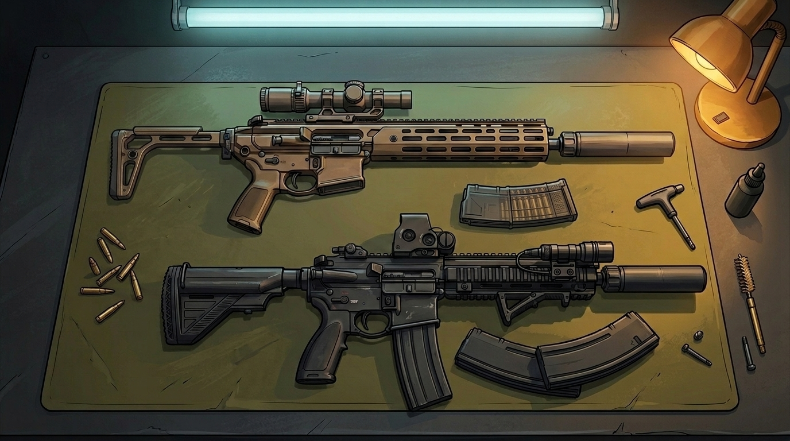

Satya TTRPG Granular Ballistics, Ammunition Physics & Firearm Engineering
Rust Engine Implementation:
crates/satya-engine/src/ballistics.rs(AmmoCaliber,BulletConstruction,AmmoQuality,MuzzleAttachment,FirearmActionType,FeedMechanism,CenterOfGravityProfile,BarrelQualityTier,BarrelMountType,ToleranceSpec,ManufacturingQuality,CartridgeBallisticSpec,GranularFirearmSpec,compute_impact_kinetic_energy_joules,evaluate_firearm_ballistics). Companion chapter to Ranged Combat, Weapon Reliability, Master Catalogs & Armor (ranged_combat_and_armor.md). Guided Play Example: See Guide 06: Firefights, Ballistics, Zero-HP Trauma & Survival.
This chapter defines the canonical rules for Ranged Firefights, Internal/External/Terminal Ballistics, Granular Firearm Engineering, Ammunition Physics, Weapon Reliability (Rel), and Body Armor (PR vs. Behind-Armor Blunt Trauma BABT) in Satya. It builds directly upon:
- Mathematical Notation, Variables & Formula Glossary (for all mathematical variables and ballistics/combat symbols Ek, mproj, mprop, Lbbl, OAL, Mwpn, ΔCoG, τtol, Acc, Wyaw, Pen, R, PREdged, PRBallistic, BABT, Rel),
- Combat Architecture, Tactical Triad & Pools (for the "Envelope & Fill" Tactical Pool Pbase = Ccombat + 3N),
- Psyche, Morale & Social Combat (for Suppression Morale Checks and the Five Conditions of Morale), and
- Health, Anatomical Trauma, Fatigue & Mental Conditions (for Hit Locations, Called Shots, Structural Wounds, and Hemorrhaging).
1. Why Guns Don't Feel the Same in Satya: Granular Engineering Architecture
In most tabletop RPGs, firearms are reduced to interchangeable reskins of the same stat block (1d8 or 2d6 damage, a flat range increment, and a magazine size). A cheap street-printed 9mm pistol, a match-grade competition handgun, a loose-tolerance stamped 7.62×39mm AKM, and a free-floated direct-impingement 5.56mm carbine feel virtually identical at the table.
Satya rejects generic weapon dice. Every firearm is a physical machine governed by four coupled engineering causal chains: 1. Internal & External Ballistics ( → Kinetic Energy Ek): How projectile mass (mproj), gunpowder charge (mprop in grains), barrel length (Lbbl), muzzle devices (suppressors, muzzle brakes), and the action's gas seal (ηaction) generate muzzle velocity and retain kinetic energy downrange. 2. Terminal Ballistics ( → Trauma Magnitude, Penetration & Wound Channels): How impact kinetic energy (Ek), projectile caliber (dcal), bullet construction, and inverse accuracy / projectile wobble (Wyaw) interact with armor plates (Pen vs. PR & BABT) and soft tissue (permanent crush cavity, hydrostatic shock, and erratic tumbling/keyholing wound channels). 3. Mechanical & Ergonomic Engineering ( → Accuracy Acc, Recoil R, & Handling TC): How action type, weapon weight (Mwpn), Center of Gravity relative to the chamber (ΔCoG), Overall Length (OAL), barrel length (Lbbl), barrel quality (Qbbl), barrel mounting (e.g., free-floating vs. clamped), mechanical tolerances (τtol), and ammunition quality (Qammo) govern marksmanship precision and recoil recovery. 4. Tribology, Tolerances & Feed Mechanics ( → Reliability Rel, Clear Jam Time TCclear, & Strip Time TCstrip): How action geometry, feed mechanism (box magazine, drum, belt, tubular, cylinder, single-shot), machining tolerance (τtol — which helps accuracy but hurts reliability!), and manufacturing quality (Qmfg) determine malfunction thresholds and how many Count-Up Ticks it takes to clear a jam or field-strip the weapon.
3. Ammunition Architecture & Internal/External Ballistics
Every cartridge in Satya is defined by six physical and operational parameters that drive both kinetic energy and weapon handling:
- Caliber (dcal in mm / inches): The bore diameter and frontal cross-section of the projectile (e.g.,
9×19mm,.45 ACP[11.43mm],5.56×45mm,6.5mm Creedmoor[6.72mm],7.62×39mm,7.62×51mm NATO,12-Gauge[18.5mm]). - Projectile Mass (mproj in grains gr): Mass of the bullet (1 gram = 15.432 grains; 1 grain = 0.0648 grams). Combined with caliber, this defines Sectional Density (SD = mproj7000 · din2)—how much mass sits behind each square millimeter of frontal area to punch through armor and resist air drag.
- Gunpowder / Propellant Charge (mprop in grains gr): The mass of chemical propellant inside the cartridge case. Propellant grains provide the thermochemical energy that accelerates the bullet down the barrel—and also create the high-pressure gas jet that adds to recoil and muzzle blast!
- Bullet Profile & Construction:• Full Metal Jacket (
FMJ/ Ball): Standard lead/copper-alloy core in a gilding-metal jacket (εexp = 1.0, standard penetration).• Jacketed Hollow Point (JHP/ Expanding): Mushrooms on soft-tissue impact to1.5×–1.8×caliber diameter (+1Caliber Crush Ical,-2Armor PenetrationPen).• Open-Tip Match Boat-Tail (OTM/ Match): Aerodynamic boat-tail with precision jacket concentricity (+1.0Accuracy, extended energy retention Ddecay).• Armor-Piercing (AP— Tungsten-Carbide / Hardened Steel Penetrator): Sub-caliber dense core (+2to+3Armor PenetrationPen,-1Soft-Tissue Crush Ical on clean through-and-through hits unless it yaws).• Subsonic Heavy Load: Reduced powder charge (mprop) paired with a heavy projectile so muzzle velocity stays below Mach 1 (< 340 m/s), eliminating the supersonic ballistic crack when paired with a suppressor (-25%to-40%Ek).• Overpressure (+P/+P+/ Hybrid-Case High-Pressure):+15–25%higher powder charge/chamber pressure (+1IKE orPen,+1Recoil R,-1Reliability Rel from accelerated extractor/parts wear). - Ammunition Quality (Qammo):• Salvaged / Corroded / Street Hand-Loads (
Q_ammo = -1.5): Inconsistent powder weights and seated depths (-1.5Accuracy,-1Reliability,+1Wobble Wyaw).• Bulk Steel-Cased / Military Surplus (Q_ammo = -0.5): Bimetal jacket, lacquered steel case (-0.5Accuracy,-1Reliability in tight chambers due to lower case obturation/extraction lubricity).• Standard Commercial Brass / Mil-Spec Duty (Q_ammo = 0.0): Baseline (0.0Accuracy,0Reliability).• Match-Grade / Precision Hand-Loaded (Q_ammo = +1.0): Extruded temperature-stable propellant weighed to ± 0.02 gr and concentric cases (+1.0Accuracy). - Feed System & Capacity: How ammunition is stored and presented to the breech (detailed in Section 3.3).
NOTEFor six additional calibers (
.22 LR,.380 ACP,10mm Auto,4.6×30mm,.300 BLKSubsonic & Supersonic) and specialty12-Gaugeshells (Breacher,Dragon's Breath,Beanbag), see Expanded Arsenal, Explosives, Breaching & Tactical Gear.
3.1 How Kinetic Energy (Ek) Is Calculated
The Kinetic Energy at Impact (Ek, measured in Joules J) is not a static lookup—it emerges from the cartridge's bullet mass (mproj), gunpowder charge (mprop), barrel length & muzzle devices (ηbbl), action gas seal (ηaction), and target distance (d):
1. Cartridge Base Thermochemical Energy (Echem)
Each grain of smokeless propellant releases ≈ 260 J of chemical energy. The fraction transferred into the projectile depends on the mass ratio between the bullet (mproj in gr) and the expanding powder gas (mprop in gr):
- Why Both Bullet Mass and Powder Grains Matter:•
.45 ACPhas a massive230 grbullet but only5.6 grof powder: the heavy slug extracts a high fraction of that small charge (Echem ≈ 560 J) at slow, subsonic velocity (260 m/s).•5.56×45mm NATOhas a light62 grbullet backed by27.0 grof powder: the huge powder-to-bullet ratio drives the projectile to~920 m/s(Echem ≈ 1,850 J).•6.5mm Creedmoorpairs a long, sleek140 grbullet with42.5 grof powder (Echem ≈ 3,300 J at835 m/s), while7.62×51mm NATO (.308)pairs a147–168 grbullet with45.0 grof powder (Echem ≈ 3,500 J).
2. Barrel Length (ηbbl) & Muzzle Device Effects
Gunpowder requires barrel length (Lbbl) to burn completely and expand behind the bullet. Every cartridge class has an Optimal Burn Reference Barrel Length (Lopt):
- Pistol / SMG Calibers (
9mm,.45 ACP): Lopt = 12.0 cm (4.7 in) - Magnum Handgun / PDW (
5.7×28mm,.357 Mag): Lopt = 16.5 cm (6.5 in) - Intermediate Rifles & Shotguns (
5.56×45mm,7.62×39mm,12-Gauge): Lopt = 45.7 cm (18.0 in) - Full-Power Battle & Precision Rifles (
6.5mm Creedmoor,7.62×51mm): Lopt = 56.0 cm (22.0 in) - Magnum & Anti-Materiel Rifles (
.338 Lapua,.50 BMG): Lopt = 68.5 cm (27.0 in)
- Short-Barrel Velocity Loss & Blast: Cutting a
5.56×45mmbarrel down from50.8 cm (20")to a26.2 cm (10.3")CQB Mk18 drops ηbbl from1.04down to0.81(-22%kinetic energy!) because unburned powder detonates outside the muzzle—imposing+2Muzzle Flash / Indoor Concussion (Tinnitusrisk)! - Muzzle Attachments (Δηmuzzle & Handling):• Bare Crown / Thread Protector: Δηmuzzle = 0.00, Recoil
+0, Length+0 cm.• Flash Hider / Birdcage: Δηmuzzle = 0.00, Recoil-0.5, suppresses night-vision flash bloom, Length+4 cm.• Muzzle Brake / Compensator: Redirects propellant gas laterally/upward against baffle plates: Δηmuzzle = −0.01, Recoil R reduced by-1to-2, Length+5 cm, but vents a violent overpressure wave sideways (+2Tinnitus/Dazzledhazard to anyone within2mof the muzzle indoors!).• Sound Suppressor / Silencer: Traps and cools expanding gases inside internal baffles: Δηmuzzle = +0.02 ("Freebore Boost"), Recoil R reduced by-1, reduces gunshot hearing detection (HEA) by-8(-12with subsonic ammo) and eliminates indoorTinnitus, but adds+16 to +20 cmto Overall Length (OAL), adds+0.40 to +0.55 kgat the muzzle tip (shifting ΔCoG forward by+1tier), and increases gas blowback/carbon fouling in Direct Impingement actions (-1Rel after60rounds unless using an adjustable gas block or flow-through suppressor)!
3. Action Type Gas Efficiency (ηaction)
Different firearm actions bleed off different amounts of chamber gas before the bullet exits the crown:
| Action Mechanism | Gas Seal Efficiency (ηaction) | Physical Explanation |
|---|---|---|
| Bolt-Action / Break-Action / Single-Shot | 1.00× (100%) | Rotating lugs lock the breech completely shut; zero gas is bled off to cycle an action. Delivers maximum velocity and kinetic energy! |
| Single-Action (SA) / Striker / Pump-Action | 0.99× (99%) | Locked breech (tilting barrel or rotating slide lock) remains sealed during peak pressure; tiny energy fraction goes into unlocking recoil mass. |
| Short-Stroke / Long-Stroke Gas Piston | 0.97× (97%) | Bleeds off ~3% of high-pressure propellant gas through a barrel port to drive the piston and bolt carrier group. |
Direct Impingement (DI) | 0.97× (97%) | Pipes propellant gas down a narrow gas tube directly into the bolt carrier's internal expansion chamber. |
| Simple / Delayed Blowback | 0.95× (95%) | Breech is held closed only by bolt inertia and spring/roller mechanical advantage, moving slightly rearward during pressure peak. |
| Revolver (Standard Cylinder Gap) | 0.92× (92%) | Vents ~8% of propellant gas sideways through the 0.15 mm clearance gap between the revolving cylinder and barrel forcing cone (cannot be suppressed unless gas-sealed). |
3.2 Master Ammunition Reference Table
| Cartridge / Caliber (dcal) | Standard Bullet Mass (mproj) | Powder Charge (mprop) | Optimal Barrel (Lopt) | Reference Muzzle Velocity & Energy (E0 at Lopt) | Energy Decay Scale (Ddecay) | Base KE Index (IKE) | Caliber Crush (Ical) | Sectional Density Bonus (SDbonus) | Typical Cost (50 rds) |
|---|---|---|---|---|---|---|---|---|---|
9×19mm Parabellum (9.0 mm) | 124 gr (8.0 g) | 5.2 gr | 12.0 cm (4.7") | 360 m/s · 520 J | 220 m | 3 | 2 (FMJ) / 3 (JHP) | +0 | $20 |
.45 ACP (11.43 mm) | 230 gr (14.9 g) | 5.6 gr | 12.7 cm (5.0") | 260 m/s · 505 J (Subsonic) | 180 m | 3 | 3 (FMJ) / 4 (JHP) | -1 (Fat/Slow) | $32 |
5.7×28mm (5.7 mm) | 40 gr (2.6 g) | 7.2 gr | 16.0 cm (6.3") | 620 m/s · 500 J | 280 m | 3 | 1 | +2 (Spitzer) | $45 |
.357 Magnum (9.1 mm) | 158 gr (10.2 g) | 14.5 gr | 16.5 cm (6.5") | 435 m/s · 970 J | 260 m | 4 | 2 (FMJ) / 3 (JHP) | +1 | $40 |
5.56×45mm NATO (5.56 mm) | 62 gr (4.0 g) | 27.0 gr | 45.7 cm (18.0") | 915 m/s · 1,680 J | 500 m | 5 | 1 (+1 Yaw) | +2 | $38 |
7.62×39mm (7.62 mm) | 123 gr (8.0 g) | 25.5 gr | 41.5 cm (16.3") | 715 m/s · 2,040 J | 420 m | 5 | 2 | +2 | $30 |
6.5mm Creedmoor (6.72 mm) | 140 gr (9.1 g) | 42.5 gr | 56.0 cm (22.0") | 835 m/s · 3,165 J | 950 m (High BC) | 6 | 1 (FMJ) / 2 (OTM) | +3 (Ultra SD) | $75 |
7.62×51mm NATO (.308) (7.62 mm) | 147 gr (9.5 g) | 45.0 gr | 56.0 cm (22.0") | 840 m/s · 3,355 J | 750 m | 6 | 2 | +2 | $55 |
12-Gauge (2¾" 00 Buck / Slug) (18.5 mm) | 437 gr (28.3 g) | 32.0 gr | 47.0 cm (18.5") | 475 m/s · 3,200 J | 80 m (Buck) / 200 m (Slug) | 6 (Close) | 4 | -2 (Buck) / +0 (Slug) | $45 |
.338 Lapua Magnum (8.6 mm) | 250 gr (16.2 g) | 90.0 gr | 68.5 cm (27.0") | 900 m/s · 6,560 J | 1,300 m | 7 | 2 | +3 | $220 |
.50 BMG (12.7×99mm) (12.7 mm) | 660 gr (42.8 g) | 235.0 gr | 73.7 cm (29.0") | 890 m/s · 16,950 J | 1,800 m | 9 | 3 | +4 | $380 |
3.3 Feed Mechanisms, Capacity & Reload Dynamics
How a weapon stores and feeds cartridges directly affects its Capacity, Reliability (Relfeed), Center of Gravity (ΔCoG), Reload Tick Cost (TCreload), and Clear Jam Time (TCclear):
| Feed Mechanism | Typical Capacity | Reliability Mod (Relfeed) | Reload Time Cost (Base TC) | Operational Mechanics, Ergonomics & Tactical Trade-Offs |
|---|---|---|---|---|
| 1. Detachable Box Magazine (Single or Staggered Double-Stack) | 7–20 rds (Pistol/BR)<br/>30–40 rds (Carbine) | +0 (Standard)<br/>-1 (Quad-stack 60-rd casket) | 12 Ticks (3.0s) (Speed drop)<br/>16 Ticks (4.0s) (Retain mag) | Fastest tactical reload. Closed-bolt weapons hold +1 round in the chamber. Weak/worn magazine follower springs or dented feed lips impose -2 Rel for that specific magazine. |
2. Drum / Helical Magazine (50–100 rds) | 50–100 rds | -2 | 20 Ticks (5.0s) | Sustained fire without reloading, but heavy clockwork spring tension and feed-tower friction reduce reliability (-2 Rel), add +1.2–2.2 kg loaded mass, shift ΔCoG forward/downward (+1 Base TC on Snap Shots), and rattle audibly (+2 Δext on Stealth). |
| 3. Belt-Fed (Disintegrating Link Box / Assault Pouch) | 100–250 rds | +0 (Braced)<br/>-1 (Moving / Unbagged) | 32 Ticks (8.0s) (Solo)<br/>14 Ticks (3.5s) (With Asst. Gunner) | Ideal for sustained suppressive fire. Opening the feed tray cover, seating the first link on the pawl, and closing the cover takes 32 Ticks solo (8s), or 14 Ticks (3.5s) with a trained Assistant Gunner. |
| 4. Tubular Magazine (Under-Barrel / Stock Tube) | 4–8 rds (+1 chamber) | +0 (Immune to mag lip dents) | 6 Ticks (1.5s) per shell (+4 Ticks combat-load into open port) | Cannot swap a whole magazine at once—topped off one shell at a time between exchanges (Tactical Topping-Off), allowing instant ammo-type switching ("Slug Select Drill": 8 Ticks to thumb a slug into the tube and rack). Dynamic CoG: Starts Front-Heavy when full, shifting toward Neutral as shells are fired! Pointed spitzer bullets cannot be loaded tip-to-primer in a tube without risking chain-detonation (uses flat-nose, buckshot, or slugs). |
| 5. Revolving Cylinder (Swing-Out or Loading Gate) | 5–8 rds | +1 (Zero feed ramp) | 8 Ticks (2.0s) per round<br/>14 Ticks (3.5s) (Speedloader / Moon Clip) | Each chamber is its own feed ramp—if a primer fails to ignite (dud), pulling a Double-Action trigger immediately indexes the next live chamber (2 Ticks, zero tap-rack needed!). High-pressure dirt inside the extractor star or bent crane rod requires 28 Ticks to clear. |
| 6. Single-Shot / Internal Fixed Magazine (Break-Action, Bolt Internal Box, Stripper Clip) | 1 rd (Single)<br/>5 rds (Internal Box) | +1 to +2 | 10 Ticks (2.5s) (Single/Clip)<br/>6 Ticks/rd (Loose top-load) | No detachable feed lips to bend or lose; ultra-reliable in mud/arctic cold. Internal box magazines can be charged 5 rounds at once via a stripper clip (12 Ticks) or topped off individually (6 Ticks per cartridge). |
4. Terminal Ballistics: How Kinetic Energy, Caliber & Inverse Accuracy Determine Damage
When a projectile strikes a target, Satya computes Raw Ballistic Impact (Raw Impact) and Base Armor Penetration (Pen) directly from three physical inputs: 1. Impact Kinetic Energy (Ek(d) → KE Index IKE) 2. Projectile Caliber & Expansion (dcal → Caliber Crush Index Ical) 3. Inverse of Accuracy ( → Projectile Wobble / Yaw Factor Wyaw)
4.1 The Three Components of Ballistic Damage
1. Kinetic Energy Index (IKE)
Kinetic energy at the moment of impact (Ek(d) in Joules, after accounting for barrel length ηbbl, action type ηaction, and range decay e−d/Ddecay) governs overall tissue disruption and armor-cracking force:
| Impact Kinetic Energy Ek(d) | KE Index (IKE) | Ballistic Benchmark Examples |
|---|---|---|
< 180 J | 1 | .22 LR pistol, spent long-range ricochet, sub-lethal beanbag. |
180 – 380 J | 2 | .380 ACP, short-barrel 5.7×28mm, 9mm at 150m. |
381 – 700 J | 3 | Duty 9×19mm (520 J), .45 ACP (505 J), 5.7×28mm carbine (500 J). |
701 – 1,350 J | 4 | .357 Magnum (970 J), 10mm Auto, 5.56mm from 10.3" CQB barrel at 100m. |
1,351 – 2,500 J | 5 | 5.56×45mm NATO (1,680–1,800 J), 7.62×39mm (2,040 J). |
2,501 – 4,500 J | 6 | 6.5mm Creedmoor (3,165 J), 7.62×51mm NATO (3,355 J), 12-Gauge (3,200 J). |
4,501 – 9,000 J | 7 | .338 Lapua Magnum (6,560 J), .300 Norma Magnum. |
9,001 – 14,000 J | 8 | .338 Lapua AP point-blank / heavy anti-materiel at 800m. |
> 14,000 J | 9 | .50 BMG (12.7×99mm) (16,950 J). |
2. Caliber Crush Index (Ical)
While kinetic energy stretches tissue temporarily, caliber (dcal) determines the cross-sectional diameter of the permanent crush channel (and spreads blunt impact over a wider surface area):
5.56mm / 5.7mm / 6.5mmFMJ: Ical = 1 (narrow frontal area; relies on velocity/KE and yaw to cavitate).7.62mm / 9mm / .338FMJ (or expanding5.56mm/6.5mmOTM): Ical = 2..45 ACP(11.43mm) FMJ /9mmJHP /.50 BMG(12.7mm): Ical = 3..45 ACPJHP /12-Gauge(18.5mmBore): Ical = 4.
3. Inverse of Accuracy: Projectile Wobble & Erratic Wound Channels (Wyaw)
In real-world terminal ballistics, a bullet that flies with laser-tight gyroscopic stability (High Accuracy, Acc ≥ +2) strikes nose-first at a 0∘ angle of attack. If it is a non-expanding FMJ or AP bullet, it often drills a clean, narrow "icepick" channel straight through soft tissue before dumping its kinetic energy.
Conversely, a bullet fired from an inaccurate weapon (Acc < 0—due to loose combat tolerances, worn/short rifling, non-free-floated barrel whip, or poor-quality surplus ammo) exits the crown with significant nutation and precession (wobble/yaw). Although this wobble makes the round harder to place on small targets at long range, any wobbling round that hits a target strikes at an oblique angle of attack—causing the bullet to immediately tumble end-over-end (keyholing), deform, or tear a wide, jagged, erratic wound channel through muscle, organs, and blood vessels!
(where Δ Wspitzer = +1 for high-aspect-ratio spitzer bullets like 5.56×45mm or 7.62×39mm M67 impacting at > 700 m/s).
- Mechanical Effect of Wyaw: 1. Erratic Soft-Tissue Cavitation: Adds +Wyaw directly to
Raw Ballistic Impactagainst unarmored targets (or when armor is penetrated), and if Wyaw ≥ 2, increases the resulting Hemorrhage Grade by+1(up to Grade 4 Arterial)! 2. Sideways Armor Strike Penalty: Because a wobbling bullet strikes hard armor slightly sideways rather than point-first, it suffers −⌊ Wyaw / 2 ⌋ to Armor Penetration (Pen)!
4.2 Unified Ballistic Impact, Penetration & Wound Tier Formulas
Combining all three terms yields the weapon's Raw Ballistic Impact and Base Armor Penetration (Pen):
See this in play: Guide 06 — Zero Hit Points: Armor (
PRvs.BABT), Hit Locations & Hemorrhage.
When a shot hits (scoring Net Successes Δ M ≥ 1 on the 2d20 cascade), the shooter's marksmanship placement adds ⌊ Δ M / 2 ⌋ to both Effective Penetration and Effective Trauma Magnitude. After resolving Armor (PR vs. BABT; see Section 7.2), the net Effective Trauma maps directly to Anatomical Structural Wound Tiers (Tiers 1–5) and Hemorrhaging:
| Net Effective Trauma | Structural Wound Tier | Aspect Ceiling Slashed | Wound Shock Added | Base Hemorrhage Grade (if Penetrated; +1 if Wyaw ≥ 2) |
|---|---|---|---|---|
1 – 2 | Tier 1 — Superficial / Graze | -2 | +0 | Grade 1 (Capillary: 0.25 Units/hr) |
3 – 5 | Tier 2 — Moderate Trauma | -5 | +1 Tier | Grade 2 (Venous: 0.5 Units/min) |
6 – 8 | Tier 3 — Severe / Fracture | -10 (Limb Disabled) | +2 Tiers | Grade 3 (Major Venous/Visceral: 1.0 Unit / 20 Ticks) |
9 – 11 | Tier 4 — Critical / Maiming | Locked at 0 | +3 Tiers | Grade 4 (Arterial Severance: 1.0 Unit / 4 Ticks) |
12+ | Tier 5 — Catastrophic / Lethal | Destroyed (0) | +4 Tiers | Grade 4+ (Immediate traumatic amputation / fatal organ rupture) |
IMPORTANTWhy
9mm,.45 ACP,5.56mm,7.62×39mm, and6.5mm CreedmoorNow Behave Completely Differently:
.45 ACP(230 grJHP,5.6 grpowder): Low velocity (260 m/s, IKE = 3), huge expanded frontal diameter (Ical = 4) ⟹Raw Impact = 7–8(Tier 3 Severe Woundon unarmored flesh!), butBase Pen = 1–2—stopped cold by even a light NIJ II/IIIA Kevlar vest (PR 4), transferring heavy blunt rib shock (BABT) instead!5.7×28mm(40 grAP,7.2 grpowder): Same ~500 Jenergy (IKE = 3), tiny frontal area (Ical = 1), high sectional/AP bonus (+3) ⟹Base Pen = 6(punches right through aPR 4Soft Kevlar Vest!), but deals a narrowerRaw Impact = 4–5(Tier 2wound unless placed into a vital box via highControl).- Loose-Tolerance
7.62×39mmAKM (123 grFMJ,25.5 grpowder, Acc = −1): IKE = 5, Ical = 2, plus Inverse Accuracy Wobble Wyaw = 2 ⟹Raw Impact = 9(Tier 4 Critical Maiming Woundwith+1erratic tumbling bleed!) at close/medium range, while its-1Accuracy and420mdrag decay make it much harder to hit small targets past300m.- Free-Floated Bolt-Action
6.5mm Creedmoor(140 grMatch OTM,42.5 grpowder, Acc = +4): Sealed bolt (ηaction = 1.00), long61 cmmatch barrel (ηbbl = 1.03), ultra-low drag (Ddecay = 950 m), zero wobble (Wyaw = 0) ⟹ retains IKE = 6 andBase Pen = 8all the way out to600m+, with-4to the shooter's Target Number (TNP)!
5. Firearm Architecture, Accuracy (Acc) & Recoil Engineering

A weapon's Intrinsic Accuracy (Acc ∈ [−4, +4]) measures its mechanical precision (dispersion in Minutes of Angle, MOA, where 1.0 MOA ≈ 2.9 cm at 100m). In Satya, Acc is not an arbitrary bonus—it is the sum of seven physical engineering factors:
- How Acc Works in the
2d20Cascade:• On any Deliberate Sighted / Aimed Shot (or Braced Overwatch shot), the weapon's Acc applies directly to the shooter's Known Tool Modifier (Δtool = −Acc, so a+3Accuracy rifle lowers TNP = 31 − CP + Δtool by-3, while a-2Accuracy street gun raises TNP by+2!).• On a rushed Single Snap-Shot / Point-Shoot, positive barrel/scope accuracy above+1cannot be exploited (capped at+1), though negative accuracy (Acc < 0) still penalizes the shot in full—and always feeds into the projectile's Inverse Accuracy Wobble (Wyaw = max(0, 1 − Acc))!
5.1 Action Types: Cycle Mechanics, Gas Loss, Accuracy & Reliability
| Action Type | Gas Efficiency (ηaction) | Accuracy Mod (ΔAccaction) | Reliability Mod (Relaction) | Follow-Up / Cycling TC Mod | Mechanical & Tactical Engineering Profile |
|---|---|---|---|---|---|
| 1. Bolt-Action (Rotating Mauser / 3-Lug Manual Breech) | 1.00× (Zero gas loss) | +1.5 | +2 | +4 Ticks (1.0s) to cycle bolt between shots | The Precision & Power Benchmark: Locked rigid breech loses zero gas; zero moving carrier parts during firing; short firing-pin lock time; camming lugs extract stuck cases with massive leverage. Cannot fire semi-auto bursts. |
2. Single-Action (SA) (Cocked Hammer Pistol / Revolver) | 0.99× (Pistol)<br/>0.92× (Revolver) | +1.0 | +1 (Auto)<br/>+2 (Revolver) | +0 (Semi-Auto)<br/>+3 Ticks (Thumb-cock SA Revolver) | Hammer is already cocked; pulling the trigger only releases the sear (1.5–2.0 kg crisp glass-rod break), minimizing sight disturbance at the moment of ignition. |
| 3. Striker-Fired (Partially Cocked Internal Striker + Tilting Barrel) | 0.99× | +0.0 | +1 | +0 Ticks | Consistent trigger pull from first to last shot, low bore axis (reduces muzzle flip -1 R), enclosed action seals out lint/holster debris, few moving parts. Slight striker take-up creep vs. a tuned Single-Action sear. |
4. Direct Impingement (DI) (Gas Tube into Internal Bolt Carrier Piston) | 0.97× | +0.5 | +0 (-1 when fouled/unlubed) | +0 Ticks | In-Line Precision Carbine: Eliminates the operating rod and piston block above the barrel; light reciprocating mass travels dead-center down the bore axis (+0.5 Acc, -1 Recoil R). Trade-Off: Vents hot, carbon-laden propellant gas directly into the receiver and bolt group—drying out lubricant and dropping Rel faster under sustained fire! |
| 5. Short-Stroke Gas Piston (Tappet / Pusher Rod with Independent Return Spring) | 0.97× | +0.0 | +1 | +0 Ticks | A short gas piston strikes the bolt carrier and vents hot gas out the front gas block—keeping the receiver cool and clean even with a suppressor (+1 Rel). Slightly heavier front-end and sharp piston tap (0.0 Acc). |
| 6. Long-Stroke Gas Piston (Piston Rod Rigidly Attached to Heavy Bolt Carrier) | 0.97× | -0.5 | +2 | +0 Ticks | Unstoppable Service Workhorse (AK/PKM pattern): Massive, heavy bolt-carrier + piston assembly travels the full length of the receiver, smashing through carbon, ice, and mud (+2 Rel). However, that heavy mass reciprocating above the bore causes harmonic barrel whip and rocks the sight picture (-0.5 Acc, +1 Recoil R). |
| 7. Pump-Action (Manual Sliding Forend + Dual Action Bars) | 0.99× | +0.0 | +2 | +2 Ticks (0.5s) to rack slide between shots | Powered by the shooter's arm rather than cartridge gas—so it reliably cycles low-pressure specialty rounds (beanbags, flares, subsonic, dragon's breath) that fail to cycle semi-auto shotguns! Under extreme stress (Wavering/Broken morale), a failed roll can cause "short-shucking" the slide. |
| 8. Blowback / Open-Bolt (Simple Inertia or Sear-Held Open Bolt) | 0.95× | -1.0 (Open-Bolt -1.5) | +0 (Closed)<br/>-1 (Open-Bolt / Auto-Sear) | +0 Ticks | Cheap to manufacture and runs cool in open-bolt SMGs/LMGs, but heavy bolt slamming forward on trigger pull pitches the muzzle off-target before the primer even fires! |
5.2 Weight, Center of Gravity (ΔCoG), Length (OAL), Barrel Specs & Tolerances
1. Weapon Weight (Mwpn) & Recoil Physics (R)
By conservation of momentum, the free recoil velocity of a firearm is inversely proportional to its mass (Mwpn in kg), while the upward torque depends on the cartridge impulse (mproj, mprop):
See this in play: Guide 06 — The
"Switch"Gunner's Unbraced Burst & Drum Jam (Rel -2).
- How Weapon Weight Affects Accuracy (ΔAccweight):• Ultralight (
< 0.65 kgPistol or< 2.4 kgRifle): Easy to carry all day, but violent recoil impulse causes sight jump and shooter flinch (-0.5Accuracy, high Rwpn).• Standard Duty Weight (0.7–1.2 kgPistol;2.8–4.0 kgCarbine/Rifle):+0.0Accuracy.• Heavy Target / Bull-Barrel Chassis (> 1.3 kgPistol;4.5–7.5+ kgPrecision Rifle / LMG): Mass damps micro-tremors and recoil impulse (+0.5to+1.0Accuracy when braced, reduces Rwpn by-1to-2), at the cost of Encumbrance (kg) and+1Exertion Mark per20 Ticksif fired standing unsupported!
2. Center of Gravity Compared to the Chamber (ΔCoG)
Where a weapon's Center of Gravity sits relative to the chamber and the firing hand's fulcrum determines how the weapon pivots during target transitions (Tempo) and under recoil (Control / Force):
| Center of Gravity Profile (ΔCoG) | Typical Weapon Examples | Accuracy Mod (ΔAccCoG) | Recoil Mod (Δ RCoG) | Snap-Shot TC Mod | Biomechanical & Handling Behavior |
|---|---|---|---|---|---|
Rear-Biased (Bullpup) *(CoG 8–15 cm behind firing grip / chamber)* | Steyr AUG, IWI Tavor X95, Desert Tech SRS | -0.5 (Long trigger linkage) | +0 | -1 Tick (Fast pivot) | Weight sits tucked into the shoulder pocket—effortless to hold one-handed or pivot around tight hallways (-1 Snap TC, compact OAL with full barrel length!). However, the light front end can feel "whippy," the long trigger transfer bar adds creep (-0.5 Acc), and the chamber sits right beside the shooter's cheek/ear (+2 Reload/Clear Jam TC). |
Chamber-Centered (Neutral / In-Line) (CoG at or within 4 cm of chamber) | AR-15/M4 Carbine, Duty Striker Pistols, MP5 | +0.5 | -1 (In-line bore) | +0 Ticks | Ideal ergonomic balance between the firing grip and support hand. Recoil pushes straight back into the shoulder/wrist rather than levering the muzzle upward. |
Moderate Forward-Biased *(CoG 5–14 cm ahead of chamber)* | Long-barrel Battle Rifles, Full-Size Revolvers, Half-Full Tubular Shotguns | +0.5 (Braced)<br/>+0.0 (Off-hand) | -1 (Muzzle weight damps climb) | +1 Tick | Forward mass acts as a natural counterweight against muzzle flip (-1 R) and steadies deliberate tracking swings, at the cost of a slightly slower initial mount (+1 Snap TC). |
Extreme Front-Heavy (Overhung) (CoG 15+ cm ahead of chamber) | Heavy Rifle + Suppressor + Laser Box, Full 8-rd Tube Shotgun, 100-rd Drum | -1.0 (Unsupported)<br/>+0.5 (Bipod) | -1 | +2 Ticks | High rotational moment of inertia—slow to swing between targets (+2 Snap TC), pulls the support arm down during off-hand aiming (-1.0 Acc unsupported; +1 Exertion Mark every 20 Ticks), unless rested on a bipod/parapet! |
3. Overall Length (OAL) vs. Barrel Length (Lbbl) in Close Quarters
- Overall Length (OAL in cm):• Concealability: Concealing a weapon under clothing (Sleight of Hand or Concealed Draw) applies a modifier based on OAL and weight:• Subcompact / Pocket (
OAL < 18 cm):-2Δext (Easy to conceal in pocket/waistband;-1DrawTC).• Full-Size Duty Handgun (OAL 18–23 cm):+0Δext (Standard IWB/shoulder holster).• PDW / Folded Stock SMG (OAL 35–55 cm):+4Δext (Requires long coat, sling bag, or briefcase).• Carbine / Bullpup Rifle (OAL 65–85 cm):+8Δext (Cannot be concealed on the body without bulky trench coat + stiffness penalty; fits in tennis bag/guitar case).• Full-Length Rifle / Suppressed Sniper (OAL > 90 cm): Impossible to conceal on body (+12or requires long hard case).• Close-Quarters Crowding (Reach 1Clinch & Tight Interior Corridors):• In Clinch Range (Reach 1) or confined spaces (vehicles, ventilation shafts, narrow stairwells), any weapon with OAL > 50 cm suffers+1Δext and+1TCper20 cmover50 cm(because the long barrel must be canted or pulled back across the chest to clear doorways, and gives a close opponent a long lever to grab/deflect with+2to their DisarmControl!).• Why Bullpups & Folding Stocks Exist: A bullpup rifle packs a full42–51 cmbarrel into a67–72 cmOverall Length—achieving full5.56mm/7.62mmmuzzle velocity (ηbbl = 1.00) while suffering20 cmless CQB crowding than a conventional rifle!
4. Barrel Length (Lbbl), Barrel Quality (Qbbl) & Barrel Mounting (ΔAccmount)
| Engineering Subsystem | Tier / Specification | Accuracy Mod | Mechanical & Physical Rationale |
|---|---|---|---|
| Barrel Length (Lbbl) | Snub / Micro (< 9 cm / 3.5")<br/>Compact / Pistol (9–25 cm / 3.5–10")<br/>Standard Carbine (26–44 cm / 10.5–17")<br/>Full Rifle (45–55 cm / 18–21.5")<br/>Match Long Barrel (56–74 cm / 22–29") | -1.5<br/>-0.5<br/>+0.0<br/>+0.5<br/>+1.0 | Longer barrels provide a longer sight radius, higher muzzle velocity (flatter trajectory, less wind drift time-of-flight), and lower uncorking pressure at the muzzle crown so escaping gas doesn't tip the bullet base as it leaves the rifling. |
| Barrel Quality (Qbbl) | Improvised / Worn / Pitted<br/>Commercial Button-Rifled / Stamped<br/>Mil-Spec Cold-Hammer Forged (CHF) Chrome-Lined<br/>Stainless 5R Match / Hand-Lapped<br/>Cut-Rifled / Carbon-Wrapped Cryo Match | -2.0<br/>-0.5<br/>+0.0<br/>+1.0<br/>+1.5 | Chrome-lined CHF barrels resist throat erosion and heat distortion during full-auto fire (+1 durability), whereas Hand-Lapped Stainless / Cut-Rifled Match barrels have sub-micron bore uniformity (< 0.5 MOA). |
| Barrel Mounting (ΔAccmount) | Clamped / Non-Free-Floated (Handguard, sling swivel, or gas/mag tube touches barrel) | -0.5 (-1.5 when braced/slung!) | Whenever the shooter rests a non-free-floated handguard on a wall, deploys a barrel-mounted bipod, or pulls tight on a sling, external force bends the barrel slightly and alters its harmonic whip node—shifting point of impact! |
| Barrel Mounting (ΔAccmount) | Free-Floating Barrel (Cantilevered from receiver barrel nut only; rigid chassis) | +1.0 | The handguard/chassis bridges over the barrel without touching it anywhere forward of the chamber. Sling tension, barricade pressure, and bipod loading transmit straight into the receiver, leaving barrel harmonics completely undisturbed! |
Continued in Companion Chapter: See Ranged Combat, Weapon Reliability, Master Catalogs & Armor (
ranged_combat_and_armor.md) for Section 2 (Ranged Fire Modes & Recoil Bracing) and Sections 6–9 (Reliability, Malfunctions, Master Firearms Catalog, Body ArmorPRvs.BABT, and Worked Examples).